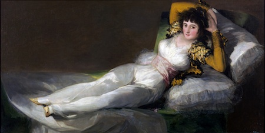
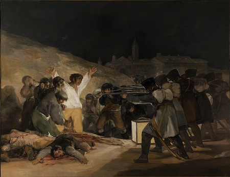
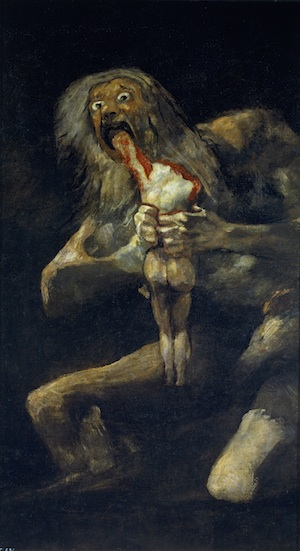
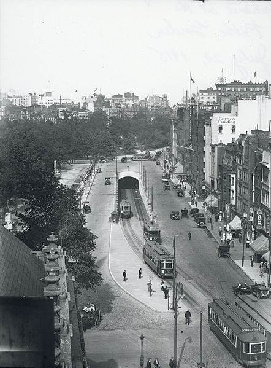
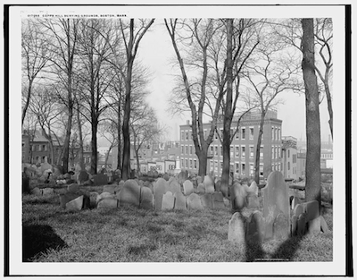
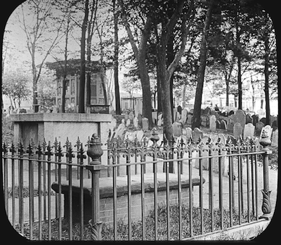

私のことを気違いだと思わなくてもいいだろう、エリオット――もっとおかしな偏見を持ってる人たちだって五万といるんだ。どうして自動車に乗ろうとしないオリヴァーの祖父さんを笑わないんだい？ 私が忌々しい地下鉄を嫌っているとしたって、それは私の勝手だし、タクシーの方が早くここまで着くし。地下鉄で来たらパーク街から丘を歩いて登らなきゃならなかったんだぜ。
去年会った時より神経質になってるのは判ってる、でも君に診察してもらう必要はないさ。確かに沢山理由があってねえ、正気でいられるのが不思議なくらいだよ。何故拷問みたいにする？ 君はそんなに根掘り葉掘り聞く人間じゃなかったろう。
ああ、君が聞かなきゃならないというなら、そうすればいいさ。君はそうするに決まってるよな、私が美術同好会から足を洗ってピックマンを避けるようになったと聞いたら、まるで悲嘆にくれる親みたいにひたすら手紙をくれたもの。今、奴はいなくなって、私も時々同好会に行ってみるけれど、私の神経は前とは違ってしまっているんだ。
いや、ピックマンがどうなったかは知らないし、考えてみたくもない。君は私がピックマンと縁を切った時、内情を知っていると勘ぐっていたようだけど――だから私は奴がどこに行っちまったのか考えたくないんだ。警察には好きなように探させておけばいい――大したことはできないさ。奴がピーターズって名前で借りてたノース・エンドの場所も判っていないところからみるとね。
自分でももう一度見つけられるかどうか――明るい真っ昼間でもそんなことをしてみようとは思わないし！
ああ、私は知ってる、残念ながら知っていると思うよ。奴がそれを維持していた理由を。で、全部説明し終わる前に、君にも私が警察を呼ばない理由を判ってもらえると思うな。連中は道案内しろというだろうけど、私はそこに戻れないんだよ、仮に道順を知っていたとしても。あるものがそこに存在していた――そして今私は地下鉄に乗れず（こっちの方も同じように笑うだろうが）二度と地下室に下りられないでいるんだ。
私がピックマンと切れたのが、リード博士やジョー・マイノットやローズワースみたいに、小うるさい老婆じみた下らない理由からじゃないのは判ってくれていると思う。病的な恐怖美術なんかにショックを受ける私じゃないし、ピックマン程の天才と知り合いになれたらそれは名誉なことだと思うぜ、そいつがどんな方向で仕事をしていてもだ。ボストンにはこれまで、リチャード・アプトン・ピックマンを越える画家がいたことはない。これは私が言い出したことで、今でもそう言い続けているし、一インチたりとも譲るつもりはないぞ。あれは奴が例の「食屍鬼の採餌」を持ち出してきたときのことだったな。マイノットはその時奴と絶縁したんだ、覚えてるだろう。
ねえ、ピックマンの作品のような絵を描くにはとんでもなく深い技術と自然についての洞察が要るんだよ。俗な表紙絵画家が絵の具を乱暴にまき散らして、そいつを悪夢だの魔女のサバトだの悪魔の肖像だのと言ったりするかもしれないけれど、偉大な画家だけがその手のものをそれらしく、本当に怯えるように描けるんだ。というのも、真の芸術家だけが戦慄というものの本当の解剖学や恐怖の生理学――正確にどんな線どんな比率が、潜み棲む本能や遺伝性の記憶と結びついていくのか、またいつもは眠っている不思議さを感じ取る感覚をかき回すのにふさわしい色彩のコントラストや照明効果がどんなものか――を知っているからね。どうしてフュースリー(*1)のような画家たちが本物の身震いを起こさせるのに、安っぽい怪談話の表紙が笑いを誘うだけなのか、君に言う必要はないよな。何かが――生命の向こう側に――あって、そういった画家たちはそれを捕えて私たちに垣間見させてくれるのだ。ドレもそうだった、サイムもそうだ、シカゴのアンガローラもそうだ。そして、ピックマンほどその力を持つ者はいなかったし――天に祈るのだが――これからもいないんだ。
彼らが何を見るか、なんてことは聞かないでくれ。なあ、普通の美術も、自然やモデルから引き出された生命力に溢れるものから、概して粗末なスタジオで商業的にちまちまと釣り上げられるゴミ屑までいろいろじゃないか。そう、真に異界的な(*2)芸術家には一種のヴィジョンがあって、それを使ってモデルを作り上げたり、あるいは彼が住まう幽冥界(*3)から現実のシーンを数多く召喚してきたりするのだと言いたいね。とにかく、彼は紛い物たちが描くミンチパイな夢とは違った芸術品を創作しようとするのだし、それは命ある画家の制作物が、通信教育の漫画描きがでっち上げたものと違うのと同じようなものなんだ。もし私がピックマンの見たものを見たなら――いや、駄目だ！ ここで一杯飲んでおこう、これ以上深入りする前に。神よ、そんなものを見たら私は生きていられるでしょうか、もしあの男――奴が人間(*4)だとして――が見たものを！
ピックマンの強みは顔にあったのを覚えているよな。ゴヤ(*5)以来、あれほど混じりけのない地獄を、一組の顔の造作や歪んだ表情に盛り込めた者がいたとは思えない。じゃあゴヤ以前はというと、ノートルダムやモン・サン＝ミシェルのガーゴイルやキメラを作った連中まで戻らなきゃならない。彼らはそういったものを全部信じていて――多分そういったものを全部見てもいたんだろう、中世には幾つか奇妙な相があるからね。覚えているけど、一度君自身ピックマンに聞いたことがあるだろう、君が逃げた前の年だ、一体全体どこでそんなアイデアやヴィジョンを拾ってくるのかって。奴が返してよこしたのは底意地の悪い笑い声じゃなかったか？ リードが奴と縁を切ったのはその笑いもあったんだ。リードはちょうど比較病理学を勉強したばかりで、あれこれの精神症候や身体症候の生物学的なあるいは進化論的な重要性に関する「内部的な知識」とやらで鼻高々だったんだな。彼はピックマンに対し日増しに反撥を覚えるようになったと言っていて、最後の頃には殆ど震え上がって――あの男の顔つきと表情は次第に好ましからざる方向に成長している、人間ではない方向に、とかね。彼は食餌のことを色々語り、ピックマンは骨の髄まで常軌を逸しているに違いないと言っていた。この件で彼と手紙をやりとりすることがあったなら君は、ピックマンの絵は気に触ったり想像力を痛めつけたりするだろうが放っておけと言ったんじゃないか。私はそう言っておいたよ――その時に。
だけど、私がピックマンを切ったのがこんな理由からじゃないと判っていてくれ。それどころか「食屍鬼の採餌」が震えが出る程凄い成果だったので、私はますます奴に感服していったね。知っての通り、同好会はそれを展示しようとしなかったし、美術館も寄贈を受け付けようとしなかった。買おうという人もいなかった、と付け加えてもいいぜ。だからピックマンは何処かに消えるまで自分の家にそれを置いといたんだな。今はセーレムにいる奴の父親が持っている――ピックマンは古いセーレムの血統の出で、先祖の中には一六九二年に吊された魔女もいたんだ。
私は屡々ピックマンの所に行って、それが習慣のようになっていった。とりわけ、異界芸術のモノグラフのためのメモをつけ始めてからはね。多分、私の頭にそんな考えを吹き込んだのが奴の作品だったんだろうけど、とにかく、採掘をはじめてみたら奴がデータと示唆の鉱山に見えたのさ。自分の所に置いてあった絵や線描を全部見せてくれた。その中には、同好会のメンバーの大半がそれを見たら、一発で奴を同好会から叩き出したに違いないと思うようなペン描きのスケッチもあった。間もなく私は敬虔な信者みたいになってしまって、まるで中学生のように何時間も奴の美術論や哲学的空論に聞き入ったものだった。その論たるやデンヴァースの施設(*6)送りになってもおかしくない程放縦なものだったさ。私の英雄崇拝のせいで、また一般人が奴と距離を置きたがり始めてたこともあって、奴は私のことを酷く信用するようになっていったんだ。そしてある夜、私の口が十分堅くて頭があまり固くなければ、いささか普通じゃないものを見せてやれるんだが、と仄めかしたんだ――家にあるものよりちょっとばかりきつい奴をね。
「なあ君、」と奴は言った「ニューベリー街向けではないものがあるんだ――ここには合わないものが、とにかく、ここでは思いもよらないものがあるんだ。魂の倍音を捕まえるのが僕の務めで、人工的な土地にでっち上げられたこんな街の成金舞台では見つからないものなんだよ。バック・ベイ(*7)はボストンではない――まだ何ものでもない、記憶を拾い上げ地場の霊を惹き付けるだけの時間がなかったからだ。ここに亡霊がいるとしても、それらは塩沢や浅瀬の従順な霊であって、僕が欲しいのは人間の亡霊なんだ――地獄を見られるだけの、そして見たものの意味を捉えられるだけの高度な組織をもった亡霊だ。
「芸術家が住むべき場所はノース・エンドだ。真摯な審美家なら誰でも、束なす口碑のためにスラムを我慢しなければならない。神よ！ なあ君、判らないのか？ そういった場所は作り上げられるだけではなく、実際に成長しているのだと。世代に次ぐ世代が、そこで暮らし、感じ、死んでいった。人々が生きて感じて死ぬことを恐れなかった時代のことだ。一六三二年にはコップス・ヒルに粉ひき所が有ったことを知らないか？ 一六五〇年までに現在の街路の半分ができていたことを？ 君に二世紀半というもの建っている家を見せてあげられるよ。現代の家がそれを見たら木っ端微塵になるようなものを目の当たりにしてきた家たちだ。現代人は生命とその背後にある力について何を知っている？ セーレムの魔女を幻影だと言うのだろうが、請け負ってもいい、僕の曾曾曾曾祖母(*8)ならいろいろ語ってくれただろう。連中は曾曾曾曾祖母をギャローズ・ヒル(*9)で絞首刑にした。聖人ぶったコットン・メイザーと一緒になって。くそったれ野郎のメイザーは誰かがこの忌々しい単調性の檻から飛び出し遂せるのを恐れていたんだ――誰か彼奴に呪いをかけるか、夜、血でも啜るかしてくれたらいいのにな！
「僕は彼奴が住んでいた家を見せることができるし、勇ましいご高言にも拘らず彼奴が怖がって入れなかったもう一つの家を見せることもできる。彼奴は馬鹿げた『キリスト者の偉業』や浅薄な『見えざる世界の驚異』には書く気になれないものどもを知っていたのだよ。いいかね、ノース・エンドにはかつて沢山の地下トンネルがあって、ある種の人々が、自分らの家同士や埋葬地や海を行き来できるようにしていたことを知っているかい？ 地上の連中には起訴でも迫害でもさせておけ――毎日毎日連中の手の届かない所で事は行われ、夜になれば連中には突き止められない場所で哄笑する声が上がるのだ！
「そうだなあ、君、賭けてもいいが、一七〇〇年より前に建てられたまま移築されていない家十軒を当れば、その内八軒の地下室に何やら奇妙なものがあるのを見せて上げられるぞ。古いその辺の土地では、今崩れたかのようにどこにも通じていない煉瓦作りのアーチや井戸を作業員が見つけたという話が新聞に載らない月はない――去年だったらヘンシュマン街の傍にそんなのが一つあるのを高架鉄道から見られたのにな。魔女やその呪文が召喚したもの、海賊どもとそいつらが海から運んできたもの、密輸業者、私掠船の船員――全くのところ、人々は如何に生きるか、如何に生命の境界を広げるかを知っていたんだ、昔は！ 勇敢で賢い者にとって、知りうる世界はここだけではないのだ――へっ！ 翻って今日びはだ、薄桃色の脳みそばかり使うようになって、絵がビーコン街の喫茶店のテーブルの感じ以上のものになってしまうと、芸術家とやらが集まる同好会ですら震え上がって引きつけを起こすときている！
「今という時代が留めている唯一の美点は、あまりに腐れ馬鹿なため過去のことをきっちりと問えないことだ。地図だの記録だのガイドブックだのがノース・エンドの何を本当に語っているかね？ けっ！ そうだなあ、プリンス街の北の方で編み目になっている三・四十の裏通りに案内することができると思う。そんな所があるとかも知れないと感づいている生き物は、そこに屯っている外人以外には十を超えないというような場所だぞ。ではそこのイタ公ども(*10)は何かその意味を知っているか？ 何も。サーバー、そういった古い土地は絢爛たる夢を見ていて、驚異と恐怖と陳腐さからの逸走で満ちあふれているのだが、それを誰一人としてわかっちゃいないし、利用することもできないでいる。あるいは、一人だけいると言った方がいいかな――僕は理由もなくほじくりかえしてきた訳じゃないからな！
「さて、君はこの種の事柄に興味を持っていると。僕がそこにもう一つアトリエを持っていると言ったらどうだ？ 古の恐怖の夜霊を捕えられる場所、ニューベリー街では考えることもできないものを描ける場所だ。あたりまえだが、同好会の呪われたオールドミスどもには話さない――ババアどもは糞のようなリードと一緒になって、そういえばあいつは僕のことを逆進化の過程をトボガンに乗って墜落している一種の怪物とか囁いているんだ。そうだよ、サーバー、僕はずっと前に、人は生命の美と同じように恐怖も描くべきだと心に決めた。だから、恐怖が生きていると考えるだけの理由があるいくつかの場所を探ったのだ。
「僕が入手した場所をかつて見たことがある者は、僕以外には生きているノルウェー人が三人いるとは思えない(*11)。距離で言えば高架鉄道からほど遠くないが、精神で言えば何世紀も離れている。地下室の奇妙なレンガ製古井戸が決め手だった――さっき話したような奴だ。小屋は崩壊寸前で僕以外には誰も住もうとは思わないだろうし、支払ったカネの安かったことときたら、ちょっと君には話せないな。窓には板を打ち付けてあって、だが大歓迎だ、僕の目的には昼の光はない方がいいからね。地下室で描いているんだ、インスピレーションが最高に湧く場所だ。他の部屋は一階に設けたけれども。シチリア人の持ち物で、ピーターズの名前で借りてある。
「さあ、君にその気があるなら、今夜そこに連れて行こう。絵を喜んでもらえるだろうと思う、そう、前に話したようにそこではちょっとばかり羽目を外しているんだよ。大旅行ってわけではない――僕は時々そこまで徒歩で行っている。そんな所にタクシーで行って人目を惹きたくないからね。サウス・ステーションからバッテリー街行きの定期便が出ているから、そこから歩けばすぐだ。」
ねえ、エリオット、この大演説を拝聴した後僕にできたこといったら、空のタクシーを見つけるや否や歩く代わりに駆け出すのを我慢するくらいのことだけだった。サウス・ステーションで電車に乗り換え、バッテリー街への階段を下りて行ったのが十二時頃、昔からの海浜地帯に沿ってずんずん歩いてコンスティテューション埠頭を過ぎた。どんな街路を渡ったか確認していなかったし、どこを折れて入ったのかも言えない。でもそこはグリーノウ小路じゃなかった。
道を折れると、そこは登りになっていて、生まれてこのかた見た中で一番古くて汚い裏通りを通って行った。崩れそうな切妻、小さなガラスのある割れ窓、半分ばらばらになった古煙突が月夜に突っ立っていた。そこで見た家の中で、コットン・メイザー時代に建っていなかった家は三軒もなかったに違いないよ――少なくとも二軒には迫り出しがあったし、ほとんど忘れられた前ギャンブレル型の尖った屋根のラインを見たことも一度はあったと思う。もっとも、好古家に言わせると、ボストンにはそんな屋根は残ってないそうだけどさ。
その裏通りも薄暗かったけれど、そこから左に曲がって入っていった裏通りは同じくらい静かで、もっと狭くて、真っ暗だった。そこから一分くらいしたところで、闇の中を鈍角に右に曲がった気がする。少ししたらピックマンは懐中電灯を取り出して、忌まわしい程虫食いだらけになっているノアの洪水以前の十枚板(*12)のドアを照らした。鍵を開けると、奴は僕を荒れた玄関に案内した。かつては壮麗だった暗いオーク材のパネルがあり――もちろん質素だが、ぞくっとする程アンドロスとフィップスと(*13)魔女の時代を暗示していた。すると奴は左手のドアから私を招き入れ、オイルランプに明かりを点けて、気楽にしてくれと言った。
さあ、エリオット、白状しよう。私は人呼んで「ハードボイルド」な男だと言っていいと思うんだが、その部屋の壁に掛かっているのを見たら気分が悪くなったよ。奴の絵だったんだ――ニューベリー街では描けないし、見せることもできない代物ども――そしてここでは「羽目を外している」と言ったのはまさにその通りだった――もう一杯くれ――もう一杯いるんだよ、とにかく！
それらの絵がどんな感じだったか君に伝えようとしても無駄だろうさ、凄まじい冒
 的な恐怖や信じ難い程の胸のむかつきや猛烈な道徳上の悪臭が、言葉の力では分類することもできないような、ほんの単純なタッチから来ていたんだから。シドニー・サイムに見るようなエキゾチックな技巧やクラーク・アシュトン・スミスが見る者の血を凍らすべく用いた
的な恐怖や信じ難い程の胸のむかつきや猛烈な道徳上の悪臭が、言葉の力では分類することもできないような、ほんの単純なタッチから来ていたんだから。シドニー・サイムに見るようなエキゾチックな技巧やクラーク・アシュトン・スミスが見る者の血を凍らすべく用いた狂気とおぞましさは前景に描かれた姿にあった――卓抜した悪魔的な肖像画法がピックマンの病的美術だったからね。それらの姿が完全に人間であることは稀で、色々な程度に人間未満だったんだよ。ほとんどの体は一応二足歩行っぽかったが、前屈みで、なんとなくイヌ科の形態を宿していた。表面は主に一種不快なゴム質だった。うげっ、今でも見えるわ！ そいつらが従事していること言ったら――まあ、細かいことは聞かないでくれ。普通は餌を食っていた――餌が何かは言いたくない。時々埋葬地や地下道に集団で現れて、しばしば獲物――というか、大事なお宝を巡って争っていた。そして、時としてピックマンは何という胸くその悪くなるような表現をこの死体安置所の戦利品の盲いた顔に与えたことか！(*14) 時折そいつらは夜、開いた窓から飛び込んでくるように描いてあったり、寝ている人の胸元にしゃがみ込んで首筋に噛み付こうとするように描いてあったりした。あるカンバスには、そいつらがギャローズ・ヒルに吊された魔女を輪になって襲っている様子が描かれていて、魔女の死に顔には奴らとの間の密接な類縁性があったんだよ。
けど、こういった醜悪なテーマや状況だけで私が気を失ったなどと思ってもらっては困る。私は三歳児じゃないんだし、こういったのは前にも沢山見たことがあった。顔なんだよ、エリオット、呪われた顔なんだ、カンバスの中から流し目をよこし涎を垂らす、生気を持ったあの顔！ 神よ、
「レッスン」という題名のがあった――天よ哀れみ下さい、あんなのを見てしまった私を！ 聞いてくれ――君には想像できるか、名状し難い犬もどきどもが墓地で輪になってしゃがみ込み、一人の小さな子供にそいつらと同じように食うやりかたを教えているところを？ 取り替え子が払う代償だ、多分――君は、奇妙な人々が人間の赤ん坊を盗み、代わりに自分たちの卵をゆりかごに入れておくという古い神話を知っているよね。ピックマンは盗み出された赤ん坊に何が起きるかを描いてみせた――どうやって育つかを――そのとき私には人間の顔と人間ならぬ姿の顔との間におぞましい関連性があるのが見えるようになったんだ。奴は、病的状態を、露骨に人間ならぬものから、人間崩れまでの間で何段階も描いて、それらの間にあざ笑うような連関と進化の過程を打ち立てていた。犬もどきは死すべき人間から生まれてきたのだ！
それなら取り替え子の形で人間界に残された犬もどき自身の子供のことを奴はどうするんだろうと思った途端、その考えにどんぴしゃりの絵が目に入った。それは昔ながらのピューリタンの家の内部の絵だった――太い梁が走る部屋に格子窓、肘掛け付の木の長椅子、不細工な十七世紀の調度、聖書を朗誦している父親の周りに座る家族。一人を除く皆の顔には高潔と崇敬の表情があったが、もう一人の顔は地獄の嘲りを見せていた。年端もいかない男の子の顔で、疑いなく敬虔な父親の息子と思しき者に属するが、本質的な部分で汚らしいものどもの縁者だった。連中の取り替え子だ――そして究極のアイロニーとして、ピックマンはそいつの顔をはっきり自分に似せて描いたんだよ。
その間にピックマンは隣の部屋のランプを点け、私のためにドアを丁重に開けたまま、「現代風習作」を見にきてもらえないかと訊いた。私は自分の思うところを大して伝えられなかったのだけれど――酷い身震いと嫌悪感で声を出すどころではなかったのだ――奴は私の考えをよく理解していて、大変称讃された気がしたのだと思う。もう一度はっきりさせておきたいのだが、エリオット、私は通常より若干逸脱したものを見たからといって、キャーキャー叫ぶような腰抜けじゃない。私は相応に教養のある中年だし、簡単にノックアウトされるような男ではないことはフランスで君も十分見たろう。丁度息を吹き返し、植民地時代のニューイングランドを地獄の別館の一種にしてしまうようなこれらの恐るべき絵にも慣れたところだったということも覚えていてほしい。まあ、これら全部にも拘らずだ、次の部屋に入った私は本当に叫び声を上げ、戸口にしがみついてやっとのことで卒倒を免れたんだよ。前の部屋は食屍鬼や魔女の集団が私らの先祖の世界に蔓延る様を見せていたが、こっちのは、恐怖を私ら自身の日常生活の中にもろに持ち込んでいたんだ！
神様、なんてものを奴は描けたのでしょうか！ 「地下鉄事故」という習作があった。その中では不愉快極まるものの大群がどこかの地下墓所からボイルストン街地下鉄(*15)の床にできた割れ目を通して這い上がり、プラットフォームにごった返す群衆に襲いかかっていた。別のはコップス・ヒルの墓地での踊りなんだが、背景が今日のものだったんだ。次のは沢山の地下室の描写で、穴や石組みのひびから怪物どもが忍び込み、にやにやと歯を剥き出しながら樽や竃の裏にしゃがんで、最初の犠牲者が階段を下ってくるのを待っていた。
一枚のむかつくようなカンバスにはビーコン・ヒルの大きな断面図が描かれているようだった。毒臭まみれの怪物どもの軍隊が、まるで蟻みたいになって、蜂の巣のように掘りまくられた地下道を身を屈ませて這っていた。現代の共同墓地での踊りが放縦極まる筆致で描かれており、もう一つ、他のもの以上にそのコンセプトが私にショックを与えたのがあった――何処とも知れぬ地下納骨所の中に何十体もの獣どもがわんさか集まっていた。その真ん中にいる奴の手には有名なボストンのガイドブックがあり、明らかに大きな声で読み上げていたのだ。皆ある一節を指し、引きつった顔で癲癇のような笑いを繰り返していた。本当に、悪魔めいた反響が聞こえるようだったよ。その絵の題名は、「ホームズ、ローウェル、およびロングフェローはマウント・オーバーン(*16)に埋葬された。」
徐々に心を鎮め、病的で極悪非道なこの第二の部屋に合わせて調整し直した私は、吐き気を催すこの嫌悪感に関していくつか分析し始めた。第一に、と独りごちた、これらのものが不愉快なのは、それらがピックマンに内在する究極の非人間性と冷淡な野蛮性とを示すからである。この人物は全人類にとって容赦のない敵に違いない、だから脳や肉体に責め苦を与え、死すべき人間の住処を腐敗させて大喜びなのだ。第二に、それらはまさにそれらの偉大さ故に恐ろしいのである。それら美術は確信をもつ者の美術だった――その絵を見る時は悪魔自体を見るのであり、その悪魔自体が恐ろしいのだ。奇妙な点だが、ピックマンは選択性や突飛さから力を得ていたのではなかった。滲み、歪曲、様式化とは無縁だった。輪郭はシャープで真に迫っていて、細部は苦痛を感じる程きっちりしていた。そして顔ときたら！
その絵が映すものは単なる芸術家の解釈などではなかった。汎魔殿そのものであり、水晶のようにクリアで厳格な客観性をもっていた。まさにそのものだったんだよ、神かけて！ あの男は全然幻想家でもロマンチシストでもなかった――色とりどりの儚い夢をかき立てようとすらしなかった、その代わり奴は冷静かつ冷笑的に、不動の、機械的な、確固たる恐怖を再現した――正面から、はっきりと、立派に、きっぱりと自分が見た世界を。どんな世界かは神のみぞ知る。冒
的な姿がピョンピョン跳ね、ヒョコヒョコ歩き、のたくり回るのを奴が一体どこで見たのか、それも神様だけがご存知だ。だが、奴のイメージがどんな当惑するような源からきているにせよ、明白なことが一つあった。ピックマンはあらゆる点に於いて――コンセプトもやり方も――完璧な、勤勉な、ほとんど科学的と言ってもいい程のリアリストだったんだよ。さて、我が主人はアトリエ本体に行くから地下室に下るようにと促した。私は未完成のカンバスの中でこれでもかと努力して自らを鼓舞したよ。じめじめした階段の下まで来ると、奴は懐中電灯を点けて手近にある大きな開けた空間の隅に向け、煉瓦でできた円形の縁を照らした。間違いなく、土間床にある大井戸だった。私らはそれに近づいていったんだが、見た所その大きさは差し渡し一・五メートル、壁の厚さが三十センチ強、床から十五センチばかり高くなっていた(*17)。がっしりした造りで、思い違いをしているんじゃなければ十七世紀のものだったな。ピックマンは言った、これは先ほど話した種類のものだ――丘を地下から掘り崩すためのトンネルの編み目が口を開けている場所だよ、と。私はそれを見ながら、なんとなく、この井戸は煉瓦じゃなくて、重そうな木の板で塞いであるだけなんだなと思った。ピックマンの胸くそ悪い仄めかしが単なる修辞法ではないとしたら、これまでこいつがどんな所と繋がってきたはずか、それを考えるとちょっとばかりブルブルきたね。そして彼の後をついて一段上がり、狭いドアを通って広めの部屋に入った。木の床で、アトリエとしての調度が整えてあった。仕事ができるだけの明かりはアセチレンランプから得ていた。
イーゼルに乗せたり壁に凭れさせたりしてあった未完成の絵は、上の階の完成品と同じように化け物じみていて、この芸術家の労を惜しまない手法を示していた。輪郭線は極めて慎重に引かれ、ピックマンが正確な遠近法と比率を得るために細心の注意を払っていることが鉛筆描きのガイドラインからわかった。この男は偉大だ――今でも私はそう言うよ。あんなことを知ってしまった今でも。私はテーブルの上の大型カメラに興味を惹かれた。ピックマンが言うには、背景を描くのに使っているのだそうで、道具一式を持って街をあちこち歩き回る代わりにアトリエ内で写真から起こしているらしい。継続的な作業を行う場合、写真は非常に優れた方法で、現実の光景やモデル並みだと奴は考えていて、いつも使っていると言っていたよ。
その部屋の四方から邪悪な流し目をくれている吐き気を催すようなスケッチと半完成品の奇形物には、なんというか大変に不穏なものがあって、ピックマンが突然、ランプから遠い側の端に置いてあった大きなカンバスの覆いを取った時、私は必死で叫ぶしかなかった――叫んだのはその夜二度目だった。叫びは古い硝石だらけの地下室の暗い穹窿を通して谺に谺を返し、私はそれに応えて声をあげるのをこらえなければならなかった。今にもヒステリックな笑いになってしまいそうだったんだ。慈悲深き創造主よ！ エリオット、でも私にはそれがどこまで現実でどこまで熱に浮かされた幻想なのかわからない。地球上にあんな夢があるとは思えないんだ！
それは途方も無く名状し難い冒
だった。赤い目を光らせ、骨張った鉤爪で一度は人間だったものを掴み、子供がキャンディスティックを齧るようにその頭部にしゃぶりついていた。そいつはなんだか屈み込んだ姿勢をしていて、見る者に、いつ何時今持っている獲物を捨てて、目に入ったもっとジューシーなごちそうに飛びかかるかもしれないと思わせるものがあった。だが、何よりクソなことに、その絵をしてあらゆるパニックの不滅の源泉としているのは、極悪非道な主題ですらなかった――そんなものじゃなかった、尖り耳の犬顔でも、血走った目でも、平べったい鼻でも、涎を垂らす唇でもなかった。鱗のついた鉤爪でも、黴だらけの体でも、半ば蹄のようになった足でもなかった――こういったどれでもなかったんだ。興奮しやすい人ならどれか一つだけでも気違いになるだろうけどね。テクニークだったんだよ、エリオット――呪われた、不敬な、不自然なテクニークだ！ これ程真に迫った生命力がカンバスの上に渾然一体となっているのを見たことがなかった。私が生き物であるのと同じくらい生きていたんだ。怪物はそこにいた――睨んではしゃぶり、しゃぶっては睨み――自然法則を一時停止でもさせない限り、モデルなしには誰もこんなものを描くことなんてできやしない――冥界を、死すべき人間なら悪魔に全て売り払ってしまったはずの地下世界を見たことでもなければ。
カンバスの空いた部分に一枚の紙片がピン留めしてあって、酷く丸まっていた――多分、背景を悪夢のようにおぞましく描き効果を上げるためにピックマンが使っている写真だろうと思った。それを手に取って広げ、目を落とした時、突然ピックマンが撃たれたかのようにぎくっとするのが見えた。奴は私がショックのあまり叫び声を上げ、暗い地下室に常ならぬ谺を響かせて以来ずっと耳を峙ててきていて、今、何かの戦慄に襲われているらしかった。もっとも私程ではなかったし、精神的というより身体的な恐怖だったようだが。奴はリボルバーを取り出して、私に静かにしていろと言い、地下室に下りていって背中でドアを閉めた。
私は一瞬麻痺していたと思う。ピックマンの真似をして耳を澄ましてみると、どこかでちょこちょこ走る音や、方角は判らなかったが一連の金切り声か何かを叩く音が聞こえたような気がした。私は大きなドブネズミどものことを想像して震えた。すると、今度はガタガタという抑制された音がし、私は鳥肌がたった――考えていたことを言葉にしたくはないのだが、人目を忍んで不器用に物をぶつける音だった。石か煉瓦の上に重い材木が落ちるときのような音だった――煉瓦に木が――これをどう考えろと？
その音は再びやってきた、もっと大きく。木が先ほどよりももっと遠くに落ちたような振動があった。キーキーいう鋭い騒音が聞こえ、ピックマンが何やら判らぬ言葉を喚くのが聞こえ、リボルバーを六弾全部撃ち尽くす音が耳を劈いた。ライオンの調教師が威嚇のために空に向かって撃つような派手なやり方だった。ギャーギャーキーキーいう長い金切り声が押し殺したように聞こえ、何かが倒れるドスンという音がした。もう一度木と煉瓦がギシギシ音をたて、間があり、ドアが開いた――その音にひどく跳び上がったことを告白するよ。ピックマンがいまだに煙を上げている武器を手に、古井戸に住み着いている肥満したドブネズミを罵りながら現れた。
「あいつらが何を食っているかは神のみぞ知るだ、サーバー」奴はにやつきながら、「この昔のトンネルは墓地や魔女の巣穴や海岸に通じているからね。だが、それが何にせよ、すぐに足りなくなるに違いない、というのもあいつらはそれこそ悪魔のように、なんとしてでも外に出たがっているからな。君が喚いたのであいつらが来たんだよ、思うに。こういう古い土地では気を付けなきゃいけないぞ――我らが齧歯類の友人たちは欠点だね、それでも時々は雰囲気や色彩という点で美点があると思うがね。」
で、エリオット、これがその夜の冒険の終わりというわけだ。ピックマンは問題の場所を見せると約束して、確かに奴はそれを実行した。奴は別の方角を通って私をその縺れ合った裏通りから連れ出したんだと思う。街灯が見える頃には、半ば見知った街に出ていたから。安アパートのブロックと古い家が混在する単調な街だった。チャーター街ということになるんだと思うんだが、私は狼狽し過ぎてどこでそれに行き当たったか判らなかった。電車は終わってしまっていたので、私らは歩いてハノーヴァー街を抜け、下町に戻った。そこの壁を覚えてるよ。トレモント街からビーコン街に上がって、ジョイの角で別れた。そこで私は脇道に入ったんだ。それ以来奴とは一言も話していない。
何故奴と縁を切ったかって？ そう焦るなよ。コーヒーを注文するから待ってくれ。他のはたらふく飲んだけど、もうちょっと飲みたいのさ。そうじゃないんだ――そこで見た絵じゃないんだよ。絵だけでも、ボストンじゃ十のうち九の家庭やクラブから叩き出されるのは請け合うし、今ならどうして私が地下鉄や地下室に近寄りたがらないか判ってくれたとも思う。それは――次の日の朝になってコートのポケットから見つけたある物のせいだ。地下室にあった恐怖のカンバスから取ってきた丸まった紙だよ。例の怪物の背景にする何かの風景写真だろうと思っていたものさ。手に取って伸ばしている時に最後の恐慌がやってきた。その後ぼんやりしたままポケットの中に丸め込んでいたらしいんだ。でもコーヒーが来た。ブラックで飲むのが賢明だぞ、エリオット。
そうだよ、その紙がピックマンと絶交した理由だ。リチャード・アプトン・ピックマン、私が知る最も偉大な芸術家――そして生命と、神話と狂気の窖との間に引かれた境界を飛び越えてしまった最悪に不潔な存在と。エリオット――リードじいさんは正しかった。奴は厳密には人間じゃなかった。奇妙な影を伴って生まれたのか、禁断の門を開ける鍵を見つけたのか。そんなのはもうどうだっていい。奴は行って――うろつくのが大好きだった伝説の暗黒の中へと戻っていってしまったからだ。ああ、シャンデリアが点く時間になったんだな。
私が燃やした物が何だったか説明しろとか言わないでくれ。推測するのもご免だ。質問しないでくれ、土竜みたいに這い上がってきたピックマンがやけに熱心にドブネズミだと言い張るものの背後に何があったかも。なあ、秘密があるんだよ、古のセーレムの時代から引きずってきた謎が、コットン・メイザーはもっと変なものどもの事を言ってるだろ。知ってるよな、ピックマンの絵がどうして糞っ垂れたほど生き生きとしていたか――ああいった顔を奴がどこから取ってきたか、皆が不思議に思っていたかを。
そう――その印画紙は背景を写したものじゃなかったんだ、結局。恐るべきカンバスに奴が描いていたおぞましい物を単純に写しているだけだった。奴が使っていたモデルだ――そしてその背景は地下室のアトリエの壁と細部までそっくり同じだった。だが神かけて、エリオット、それは生物の写真だったんだよ！
完
［＃改ページ］翻訳について
「時間からの影」に続いて、一人称視点のを訳してみました。今回は少し自由に言葉を選んであります。一番恐ろしい物を語るときは酒ではなくブラックコーヒーを飲むというのがラヴクラフトですね。底本は Wikisource (https://en.wikisource.org/wiki/Pickman's_Model) 版で、適宜 The H.P. Lovecraft Archive (http://www.hplovecraft.com/writings/texts/fiction/pm.aspx) 版を参照しました。
残念ながらボストンの地理に不案内なので、語り手とピックマンがどう歩いたのか今ひとつ判りませんでした。雰囲気を知るには、Noth End Alleys (http://forgotten-ny.com/2015/05/north-end-alleys/) や Essential Guide to Living Lovecraft (http://www.atlasobscura.com/articles/essential-guide-to-living-lovecraft) が役に立つでしょう。
この翻訳は独自に行ったもので、先行する訳と類似する部分があっても偶然によるものです。また、この訳文は他の拙訳同様 Creative Commons CC-BY 3.0 の下で公開します。ＴＰＰに伴う著作権保護期間の延長が必至となった現状で、ほとんど自由に使える訳文を投げることには多少の意味があるでしょう。この版で用いている画像データは全て Public Domain です。
(*1) Fuseli：ヨハン・ハインリヒ・フュースリー（http://www.tate.org.uk/whats-on/tate-britain/exhibition/gothic-nightmares-fuseli-blake-and-romantic-imagination/gothic）のことだろう。以下、Dor ：ギュスターヴ・ドレ（http://www.gutenberg.org/ebooks/author/1896）、 Sime：シドニー・ハーバート・サイム（http://www.sidneysimegallery.org.uk/index.shtml）、絵巻茶屋（http://www.emakijaya.com/2008/09/sidney-herbert-simeh1867-1941.html）にダンセイニ卿との関係が説明されている。Angarola of Chicago：アンソニー・アンガローラ（http://www.chicagomodern.org/artists/anthony_angarola/）のことと思われる。
：ギュスターヴ・ドレ（http://www.gutenberg.org/ebooks/author/1896）、 Sime：シドニー・ハーバート・サイム（http://www.sidneysimegallery.org.uk/index.shtml）、絵巻茶屋（http://www.emakijaya.com/2008/09/sidney-herbert-simeh1867-1941.html）にダンセイニ卿との関係が説明されている。Angarola of Chicago：アンソニー・アンガローラ（http://www.chicagomodern.org/artists/anthony_angarola/）のことと思われる。
：ギュスターヴ・ドレ（http://www.gutenberg.org/ebooks/author/1896）、 Sime：シドニー・ハーバート・サイム（http://www.sidneysimegallery.org.uk/index.shtml）、絵巻茶屋（http://www.emakijaya.com/2008/09/sidney-herbert-simeh1867-1941.html）にダンセイニ卿との関係が説明されている。Angarola of Chicago：アンソニー・アンガローラ（http://www.chicagomodern.org/artists/anthony_angarola/）のことと思われる。(*2) weird
(*3) spectral world
(*4) what that man -- if he was a man -- saw、この二番目の man を「人間」とすると明白なネタバレになるのですが、「男」とすると今度は間違いになるのでつらいところです。
(*5) Goya：フランシスコ・デ・ゴヤ。こういった絵を描いた画家です。


ソースはいずれも Wikimedia commons のファイルで、それぞれ「着衣のマハ」、「マドリード、1808年5月3日」、「我が子を食らうサトゥルヌス」の解像度を落としたものです。サルヴァスタイル美術館のゴヤのページ（http://www.salvastyle.com/menu_romantic/goya.html）で作品解説を読めます。
(*6) デンヴァース州立精神病院（http://www.danversstateinsaneasylum.com/）のことでしょう。
(*7) 十九世紀半ばにボストンの隣の湾を埋め立てて作った新しい街。Back Bay Information (http://bostonbackbay.com/visitors/back-bay-information/history/) 参照。
(*8) four-times-great-grandmother、合ってますよね？
(*9) Gallows Hill：セーレムにある実在の地名。元はどこにあったか考察するページ（http://historyofmassachusetts.org/where-is-the-real-gallows-hill/）があります。
(*10) Dagoes：Diego（英語でいう James）に由来する、スペイン人、ポルトガル人に対する蔑称。イタリア人にも使われるのでこう訳しました。
(*11) I've got a place that I don't believe three living Nordic men besides myself have ever seen. この three living Nordic men に何か含みがあるのでしょうか。
(*12) ten-panelled door
(*13) Andros and Phipps：多分、Edmund Andros と Sir William Phipps。いずれもメイザー時代の植民地総督。INCREASE MATHER IN NEW ENGLAND PURITANS & PILGRIMS (http://www.shmoop.com/new-england-puritans-pilgrims/increase-mather.html) 参照。
(*14) And what damnable expressiveness Pickman sometimes gave the sightless faces of this charnel booty！
(*15) Boylston Street subway：実在の地下鉄線（http://www.mbta.com/schedules_and_maps/subway/lines/stations/%EF%BC%9FstopId=15597）です。1914年に路面電車用の地下トンネルとして開通。開業当時の姿はこんな感じ
写真のソースは Wikimedia Commons です。なお Wikisource 版では Boston Street Subway になっています。
(*16) 実在の墓地（http://mountauburn.org/）です。
(*17) five feet across, with walls a good foot thick and some six inches above the ground level
以下、固有名詞の一覧ですEliot, Oliver's grandfather, Park Street, Peters, Dr. Reid or Joe Minot or Rosworth, Richard Upton Pickman, 'Ghoul Feeding', Copp's Hill, Magnalia, Wonders of the Invisible World, Henchman Street, Beacon Street, Prince Street, Thurber, South Station, Battery Street, Constitution Wharf, Greenough Lane, 'The Lesson', 'Subway Accident', the Boston (Boylston) Street subway, Charter Street, Hanover Street, Tremont, Beacon, Joy
コップス・ヒルはこんな所です


ソースはいずれも Wikimedia Commons で、それぞれ一九〇四年（https://commons.wikimedia.org/wiki/File:Copp%27s_Hill_Burying_Grounds_Boston_Detroit_Publishing.jpg、一八九五年（https://commons.wikimedia.org/wiki/File:Copp%27s_Hill_Burying_Grounds.jpg）撮影です。後者の近景に柵で囲われた墓石がありますが、コットン・メイザーの墓もこんな感じです。
懐中電灯対棒電気
イギリスびいきで古物が好きだった H.P.L. は、懐中電灯を度々英国風に "electric torch"、直訳すれば「電気松明」と書いています（「忌まれた家」、「チャールズ・ウォード」、「狂気の山脈にて」、「時間からの影」）。一方、これと「闇をさまようもの」では "flash-light" という現在でもアメリカで広く使われている言葉になっています。翻訳できない微妙な違いについて、ちょっと触れておきました。electric torch を「棒電気」と訳す手もありますが、流石にこれほど廃絶した用語を用いるとウィレット先生に…